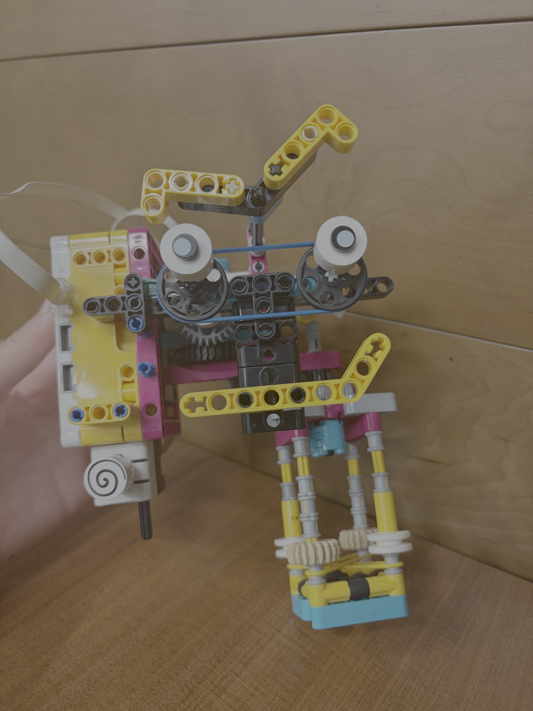

We used our kits to make a robot that an astronaut could use to unscrew two nuts from one bolt and screw them onto a second bolt. There were many requirements for this: it had to be a tool that you could use one handed (because you need to be able to hold onto the space ship); it had to be able to be used with both your right hand and your left hand (to accomidate any astronaut); you had to be able to use the tool right-side-up, upside-down, and sideways (to ensure that we were not relying on gravity because there is no gravity in space).